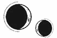

CAPÍTULO 56
Mayus 1787
Los inmarcesibles lanzaron la primera bomba de anulitio a mediados de primavera.
La Resistencia sabía que un ataque así era inminente; desde que los inmarcesibles emplearon el anulitio contra Lila, lo habían estado usando cada vez más. Aunque provocaban heridas graves, las armas de anulitio eran poco útiles, ya que se trataba de una sustancia muy frágil. Sin embargo, las bombas fueron devastadoras.
Para eliminar la resonancia de un alquimista, bastaba con unos pequeños fragmentos de metralla. Si el anulitio se disolvía y se introducía en el torrente sanguíneo, el personal sanitario tenía que coser las heridas de forma manual, suministrar agentes quelantes y esperar a que el paciente recuperara su resonancia.
La medicina alquímica avanzada, junto con la sanación, conseguía que los combatientes de la Resistencia se recuperaran con rapidez; siempre y cuando los soldados no murieran desangrados. Las heridas que en otras partes del mundo tardaban meses en curar se sanaban allí en unos días o semanas.
Sin embargo, con el anulitio, la convalecencia se prolongaba.
El hospital se había preparado lo mejor posible: el personal médico y quirúrgico había aprendido a operar de forma manual y el departamento de quimiatría había producido una gran cantidad de agentes quelantes. Sin embargo, toda esa logística no bastó para subir la moral. La gente estaba aterrorizada. La alquimia y la resonancia lo eran todo; vivir sin ambas era como regresar a la era prealquímica.
Ilva, que siempre había mantenido una fachada de serenidad, desde el secuestro de Luc parecía completamente desorientada, como si no lograra comprender del todo la magnitud del problema ni cómo solucionarlo. Tal vez se debiera a que era un lapsus, pero parecía incapaz de entender la gravedad emocional de la amenaza del anulitio y su impacto en la moral de la gente.
Lo único bueno era que, al parecer, Luc volvía a hacerse cargo de sus responsabilidades. Aunque pasaba la mayor parte del tiempo encerrado en sus aposentos, apareció de repente en una asamblea que había convocado Althorne para calmar los ánimos de la Resistencia. Llegó vestido de blanco y dorado, lívido e indignado. Había adelgazado mucho. A pesar de que la armadura lo disimulaba, se le veía muy demacrado. Aun así, parecía que su cuerpo solo era un cascarón y que era su alma la que brillaba con fuerza. Por muy frágil que pareciese, aún irradiaba vida.
—Morrough, como todos los nigromantes que le precedieron, quiere que la Resistencia tenga miedo y que la luz de la Llama Eterna se extinga —proclamó con los ojos azules centelleantes—. No le daremos esa satisfacción. Paladia nos pertenece. Construimos esta ciudad como un faro, y esa luz ha protegido al mundo de la infamia de la nigromancia durante generaciones. Los dioses están de nuestra parte. Sol es inconquistable. Las leyes de la naturaleza no le concederán la victoria a la corrupción. No fracasaremos; conocemos las recompensas que nuestros ancestros recibieron por su fe y su coraje, ¡y nosotros disfrutaremos de lo mismo!
Había cierta desesperación en su voz y, aun así, resultaba extrañamente deslumbrante, como el sol en su cénit. Helena se dio cuenta de que el ambiente cambiaba: la incertidumbre y el miedo dieron paso a la convicción. A la fe.
Luc continuó hablando. Describió la ciudad con el detalle de quien la conoce como la palma de su mano, y habló de los sueños que su padre y él tenían para el glorioso futuro de Paladia.
Cuando Helena quiso darse cuenta, ya estaban organizando una contraofensiva y preparando escuadrones. El nuevo batallón de Luc, que todavía no había entrado en combate, salió hacia la ciudad junto a cuatro batallones más y lograron recuperar un distrito de la isla Oeste.
Desde un puente colgante, Helena observó cómo regresaban en un desfile de victoria, entre gritos de júbilo. Luc iba de pie en la parte trasera de un camión, acompañado de Sebastian, sin dejar de saludar mientras atravesaban las verjas de la entrada.
Lila no había asistido. En teoría, seguía recuperándose, pero lo cierto era que aún no se había celebrado el juicio y a los líderes les preocupaba cómo iba a reaccionar Luc. Si hacía uso de su poder como principado para oponerse al Consejo y a los comandantes militares, sus órdenes no podían desestimarse sin que se produjera un colapso absoluto de liderazgo, algo que podría destrozar a la Resistencia.
Mientras que él siguiera considerando a Lila su paladina primera, Lila podía ignorar cualquier instrucción del Consejo, ya que sus votos se debían a Luc. Por eso, Lila permanecía en un limbo. Aún no tenía permiso para combatir, pero ya no estaba herida. Se plantó en la puerta de la Torre y aplaudió con todos los demás, aunque la pena era visible en su rostro.
El contrataque había sido tan repentino y descarado que los inmarcesibles no tuvieron tiempo de organizar una defensa. De forma similar, el Consejo se mostró tan desconcertado por el hecho de que Luc asumiera el liderazgo tan rápidamente que no supo cómo reaccionar ante esa determinación. Después del éxito que tuvo en la ofensiva, nadie se atrevía a discutirle nada, especialmente porque había conseguido subir la moral de la Resistencia al tiempo que se consolidaba en el Consejo.
Las batallas empezaron a mezclarse unas con otras. La única diferencia era que ahora había un pabellón médico especializado para los heridos de anulitio, las bajas aumentaban sin cesar y las infecciones y las enfermedades se volvían cada vez más peligrosas. Primero se notó la masificación, luego la escasez de sábanas y vendas limpias y, después, aparecieron las complicaciones médicas.
En ocasiones, Helena trabajaba durante varios días seguidos y tenía que ignorar las llamadas de Kaine, salvo que se tratara de mensajes para Crowther. Al menos, trabajar la mantenía alejada de los pozos de preocupación que acechaban su mente.
Cuando estaba sola, se tumbaba en la cama y miraba fijamente el techo mientras hacía girar una y otra vez el anillo de Kaine en su dedo. No dejaba de pensar en el sello que Wagner había dibujado. Tenía nueve puntas.
La alquimia norteña casi siempre empleaba cinco y ocho puntas, es decir, los números elementales o celestiales. Esas eran las únicas fórmulas que se enseñaban en la Academia, a excepción de la piromancia de los Holdfast, que requería un sello de siete puntas, pero Helena solo lo conocía por haber ayudado a Luc con sus deberes.
Jamás había oído hablar de un sello de nueve puntas. No tenía ni idea de cómo funcionaba, y el único ejemplo del que disponía estaba plagado de errores y lo había dibujado alguien que no sabía nada sobre los principios básicos de la alquimia.
¿Cómo iba a revertir lo que le habían hecho a Kaine si ni siquiera entendía el procedimiento? Movió los dedos para intentar visualizar los canales de energía. Su mente no dejaba de regresar a Soren.
Acalló esos pensamientos mediante la animancia y se obligó a dejar atrás todos sus recuerdos sobre él. Aun así, seguía incordiándola, no tanto por su destrucción sino por el instante en que murió. Siempre intentaba romper la conexión resonántica antes de que los pacientes murieran, pero en aquella ocasión había estado totalmente concentrada en Soren.
La energía la recorrió mientras la sentía como una corriente eléctrica, y no pudo dejar de pensar en ello mientras imaginaba cómo canalizar a través de un múltiplo de tres.
Eso le dio una idea: si Morrough podía atrapar almas vivas en hueso y el primer Nigromante había metido todas las almas de una ciudad en una gema, ¿qué sucedería si se capturaba otro tipo de energía? ¿Alguien lo había intentado?
La siguiente vez que notó que un paciente estaba a punto de fallecer, en vez de romper la conexión, mantuvo el contacto y se aferró a la energía que liberó al morir. Esta atravesó su resonancia y le dejó las manos entumecidas y cosquilleantes durante horas.
Bueno, tenía sentido que no pudiese retener esa energía. Necesitaba algún tipo de recipiente. El amuleto de heliolita estaba hecho de… ¿mercurio? ¿O de vidrio? Tal vez fuese cristal. Probó con distintos materiales que encontró en los almacenes e incluso introdujo de contrabando metales más extraños y otros compuestos en el hospital, para comprobar si la energía se canalizaba en alguno.
Las heliolitas se resquebrajaron, y el metal blanco hizo que su bolsillo se incendiara. En una caja que encontró en un rincón del almacén, había trozos enormes de obsidiana. El cristal volcánico tenía un punto de fundición más alto que el cristal normal.
Se metió un trozo en el bolsillo.
Cuando sintió que la vida de un paciente se extinguía, agarró la obsidiana. Era uno de los pacientes afectados por el anulitio. La metralla le había destrozado los órganos y la infección no había mejorado con el tratamiento. Helena podía obligar a su corazón a que siguiera latiendo, pero solo conseguiría ralentizar su muerte; moriría en cuanto ella se alejara. Tenía la piel ardiendo por la fiebre y ella sostenía su mano con fuerza sin dejar de hablar con alguien que no estaba allí. Sus palabras empezaron a sonar más vagas y escurridizas.
Helena tragó saliva y mantuvo abierto el canal de resonancia cuando sus ojos perdieron la vida. La muerte la atravesó como una descarga eléctrica y fue directa a la obsidiana.
El brazo se le quedó dormido. Cuando recuperó el movimiento, el chico ya estaba muerto y la obsidiana irradiaba calidez entre los dedos de Helena. Podía sentir esa extraña y oscura energía.
Le cerró los ojos y le cubrió el rostro con una sábana, pero entonces notó que le temblaban los dedos. ¿Acababa de atrapar un alma en un cristal volcánico? Lo apretó con fuerza. No. Sabía cómo era esa energía, por el amuleto y por Kaine. Esto era algo distinto.
Aun así, intentó fingir que no estaba en su bolsillo mientras acababa el turno.
Después corrió al laboratorio. Sin embargo, al abrir la puerta, se detuvo en seco, pues allí estaba Lila, encogida en el suelo con la cara hinchada y los ojos rojos.
Helena se quedó petrificada. Por Dios, el tribunal. Debía de haber empezado el juicio.
Apenas había visto a Lila ni había hablado con ella desde que rescataron a Luc. Un día volvió a su habitación y descubrió que todas las pertenencias de Lila habían desaparecido, y se enteró de que habría un funeral privado para Soren cuando ya se había celebrado.
A pesar de lo mucho que le hubiera gustado dar explicaciones, no podía hacerlo, porque la versión oficial mantenía que Soren simplemente había muerto.
No obstante, Luc le habría contado la verdad a Lila.
Helena permaneció donde estaba, no tenía ni idea de qué había llevado a Lila hasta ahí.
—Lila. —Helena dejó la obsidiana sobre la mesa y dio un paso hacia ella con cautela—. Lila, ¿qué sucede? ¿Qué ha pasado?
Lila miró fijamente a Helena y tardó un buen rato en responder:
—He cometido un error —dijo al fin en apenas un susurro—. He cometido un terrible error.
Helena tragó saliva con dificultad.
—No… No pasa nada. Estoy segura de que se arreglará. Da igual lo que hayas hecho, seguro que no es para tanto.
El fantasma de Soren pareció flotar entre las dos.
—No. —Lila sacudió la cabeza—. He estado mintiéndole a todo el mundo. He estado mintiendo toda mi vida. Y ahora… ahora no sé qué hacer… —Su voz sonaba estrangulada. No terminaba las frases—. Soren era la única persona que lo sabía —susurró. Tenía los ojos vidriosos, pero no le cayó ninguna lágrima—. Siempre me guardó el secreto, siempre sabía qué hacer. Decía que su trabajo era… cuidarme.
—¿Qué ha pasado? —Helena se acercó con cautela.
Lila levantó la vista y cogió aire. La barbilla le tembló justo antes de responder:
—Estoy… estoy embarazada.
Helena se quedó inmóvil. Sin palabras. Estaba demasiado perpleja incluso para creer lo que Lila acababa de contarle.
Si sabía que estaba embarazada, entonces debía de estarlo desde hacía dos o tres meses, y eso suponiendo que tuviera un ciclo regular, pero Helena sabía que no era el caso. En aquella época, Lila aún seguía hospitalizada.
—¿Cómo es posible? —Esa fue la única pregunta que a Helena se le ocurrió hacer. Dejó a un lado todo lo que eso implicaba.
Lila tragó saliva y sacudió la cabeza, pero torció el gesto de dolor al sentir que le tiraban las cicatrices del cuello.
—Lo sé. Yo tampoco pensé que fuera posible después de… todo lo que ha pasado. Siempre di por hecho que no podría quedarme embarazada.
—No —la cortó Helena con impaciencia—. Bueno, sí, eso también, pero no estabas embarazada cuando estuviste ingresada. Te dimos el alta hace unos… ¿Cómo sabes que estás embarazada?
Lila bajó la mirada para esquivar los ojos de Helena.
—Ese… ese es el secreto. Sé que estoy embarazada.
Entonces le pareció tan increíblemente obvio que Helena no entendió cómo no se había dado cuenta años atrás.
Lila Bayard, que solía volver de las batallas sin apenas un rasguño, que siempre se recuperaba milagrosamente de sus heridas, quien se había adaptado a una prótesis en la pierna en cuestión de meses cuando todo el mundo decía que tardaría un año. La persona a la que jamás le costaba recuperarse, excepto cuando perdió su resonancia.
—Eres una vivemante —concluyó Helena.
Lila no la miró a los ojos cuando asintió.
—Nunca la he usado con nadie, salvo conmigo misma. Un par de veces en Soren, pero solo cuando él me lo pedía. Me dijo que no podía permitir que nadie lo supiera. Ni siquiera nuestros padres, porque, si alguien se enteraba, no me dejarían ser la paladina de Luc.
—¿Durante todo este tiempo? —preguntó Helena con suavidad, aunque lo cierto era que se sentía traicionada.
—Lo siento. Quería decírtelo, pero… sabía lo que te había pasado a ti. No podía arriesgarme a eso; la vida de Luc estaba en juego. No podía ser como tú… A mí solo se me da bien luchar.
Aquella confesión era más de lo que Helena podía asimilar en ese momento.
—¿Quién es el padre? —preguntó, como si no fuera obvio.
—Sabes que es Luc.
Helena asintió. Quiso enfadarse, pero sus propios secretos eran peores, y que Lila hubiese acudido a ella en ausencia de Soren lo decía todo.
—Seguramente te hayas enterado de que quieren someterme a juicio, a menos que renuncie voluntariamente a ser paladina —le contó con una voz que sonaba hueca y desesperada—. Antes me decía a mí misma que al final todo merecería la pena, pero la guerra ha durado demasiado. Nunca quise… Bueno, él lo intentó en alguna que otra ocasión, pero yo siempre me negué. —Lila sacudió la cabeza—. Aunque ha sido en vano, todo el mundo piensa que hemos estado acostándonos en el frente. No ha servido de nada que no lo hiciéramos. —Bajó la vista—. Cuando regresó después de tomar ese distrito… Sé que no era por mí, pero sentí la frustración de que me hubieran dejado atrás y de saber que ya siempre lo harían. Después vino a buscarme y me dijo que había estado pensando en mí todo el tiempo y… —Se encogió de hombros—. Todos creen que lo estamos haciendo, así que…
Helena posó una mano en su hombro con sumo cuidado.
—No pasa nada. Puedo arreglarlo. Al haberlo detectado tan pronto, podemos usar medicación o la vivemancia, lo que tú prefieras. Nadie se enterará.
—No.
Helena miró fijamente a Lila, convencida de que la había oído mal. La paladina tomó aire sin atreverse a mirarla.
—Sí, vine por eso. Sabía que tú podrías hacerlo, pero… mientras esperaba no dejaba de pensar. ¿Cuáles eran las probabilidades? —Negó con la cabeza—. No recuerdo la última vez que tuve la regla. Han pasado años. Creía que no podría quedarme embarazada. Siempre pensé que sería Soren el que se casaría y engendraría la nueva generación de Bayard, pero ahora solo quedo yo.
Helena no supo qué responder. Lila bajó la mirada y se encogió un poco más, como si percibiera los prejuicios de la sanadora.
—Lo más probable es que no llegue a término, así que tal vez puedo esperar y… tenerlo durante un tiempo.
—¿Y si llega a término? —preguntó Helena.
Lila no respondió.
Helena sintió una presión en el pecho. Quería decirle a Lila que estaba comportándose como una estúpida por pretender tener un bebé durante la guerra. Lila no sería la primera en hacerlo, pero esas chicas eran diferentes. Lila era alquimista, una guerrera. Ninguna de esas cosas iba de la mano con la maternidad. Las normas eran estrictas.
—No llegará a término —repitió Lila.
—Eso no es una respuesta —insistió Helena—. ¿Qué harás si el embarazo sigue adelante? Vas a tener un bebé durante una guerra cuando ya te estás enfrentando a un tribunal. No volverás a ser paladina. No te dejarán combatir nunca más.
Lila no dejaba de morderse las uñas; le sangraban las cutículas.
—Luc tendrá que dejar de luchar para ser líder. Ilva está demasiado mayor para seguir ejerciendo como su mano derecha, y no confía en nadie más para reemplazarla. Dicen que, si renuncio a ser paladina, no me someterán a juicio. Sebastian aceptará mi cargo y yo podré combatir de nuevo. —Lila respiró hondo—. Seré comandante de mi propia unidad: la primera mujer comandante.
La voz de Lila no mostraba ni orgullo ni emoción por lo que era un logro histórico, porque era imposible que volviese a entrar en combate una vez que le arrebatan su rango y se produjera el escándalo que le seguiría. Tanto su reputación como su legado quedarían manchados para siempre.
—Si dices que estoy enferma, nadie sabrá que estoy embarazada… Y, si el embarazo no sale adelante, volveré al servicio militar como si nunca hubiese pasado.
—O podrías retirarte del combate activo y entrenar a reclutas a los que les vendría muy bien tu experiencia —replicó Helena—. No solo tienes dos opciones.
—No pienso retirarme. Los Bayard no nos retiramos —expresó Lila con los ojos azules brillantes. Después torció el gesto—. Perdóname. La gente no deja de decirme que no es el fin, pero… —Soltó un bufido—. Sé cómo son las cosas. Sé lo que recordarán. No será nada de lo que hice en combate.
Ahí fue cuando Helena lo entendió. El embarazo cambiaba la narrativa. No borraba el escándalo, pero le daba otra forma; en vez de una violación de un juramento que estuvo a punto de ocasionar una catástrofe, se trataba de una historia de amor.
El principado necesitaba un heredero desde hacía mucho tiempo, pero era complicado convertirlo en prioridad cuando la vida de Luc debía estar rodeada de divinidad, y Luc, por razones obvias, siempre se había negado a un matrimonio concertado, que era lo que quería el Consejo.
Un heredero Holdfast podía darle fuerzas a la Resistencia. ¿Cómo iba a ser una guerra perdida si había un símbolo tan tangible del futuro?
Por supuesto que Lila prefería esa versión de su historia en vez de las alternativas a las que se enfrentaba.
Lila siempre le había parecido imparable, pero Helena veía ahora todas las grietas que escondía. Los deseos que nunca se había permitido albergar.
Helena se vio reflejada en ella.
—¿Luc lo sabrá?
La paladina tomó aire y negó con la cabeza.
—No, creo que para él sería una distracción. Ahora mismo está bajo una presión tremenda, y la transición de poderes será complicada. Si lo supiera y después quedara en nada… Le destrozaría haber tenido la esperanza.
—¿Luc… quiere tener hijos? —preguntó Helena con cierta vacilación. No recordaba haber oído a Luc hablar de niños. Lo único que le pedía al futuro era que acabase la guerra y viajar. Aunque también era cierto que el tema de Lila nunca lo habían hablado abiertamente. Helena siempre lo había sabido, pero Luc jamás lo reconoció, ni siquiera delante de ella.
Lila asintió.
—Aquella noche hablamos del tema. Me dijo que él no era como su padre, que no solo quería cumplir con su deber, que deseaba tener una familia para disfrutarla, no únicamente por el bien del principado o porque tuviera que haber un heredero, sino porque amaba tanto a alguien que quería hacerlo. Así es en este caso.
Helena tragó saliva. Seguía sin gustarle todo eso, pero no podía negarle nada a Lila.
—Tendré que hablar con Crowther para barajar nuestras opciones.
A Lila se le descompuso la cara.
—¿Por qué vas a decírselo a él? Es odioso. Luc no lo soporta.
Helena esquivó su mirada.
—Es la opción más útil. No tengo autoridad para poner a alguien en cuarentena. No creo que quieras involucrar a Elain o a Matias. Tus opciones son Crowther o Ilva, e Ilva no se ha mostrado muy digna de confianza últimamente.
—Está bien. —Lila suspiró con un gesto de dolor—. Hablaremos con Crowther.